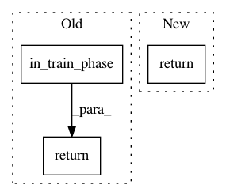

30f1daed1ffb295f5bb2e530d8946ca680756ff7,keras_rcnn/layers/_object_detection.py,ObjectDetection,call,#ObjectDetection#Any#Any#,19
Before Change
return detections[num_output]
bounding_boxes = keras.backend.in_train_phase(proposals, lambda: detections(0, metadata, deltas, proposals, scores, masks), training=training)
scores = keras.backend.in_train_phase(scores, lambda: detections(1, metadata, deltas, proposals, scores, masks), training=training)
masks = keras.backend.in_test_phase(masks, lambda: detections(2, metadata, deltas, proposals, scores, masks), training=training)
return [bounding_boxes, scores, masks]
def compute_output_shape(self, input_shape):
return [(1, input_shape[0][0], input_shape[1][2]), (1, input_shape[0][0], input_shape[2][2]), (1, input_shape[0][0], input_shape[4][2], input_shape[4][3], input_shape[4][4])]
After Change
detection = keras.backend.in_train_phase(scores, lambda: detections(metadata, deltas, proposals, scores, masks), training=training)
return detection
def compute_output_shape(self, input_shape):
return [(1, input_shape[0][0], input_shape[1][2]), (1, input_shape[0][0], input_shape[2][2]), (1, input_shape[0][0], input_shape[4][2], input_shape[4][3], input_shape[4][4])]
In pattern: SUPERPATTERN
Frequency: 3
Non-data size: 3
Instances
Project Name: broadinstitute/keras-rcnn
Commit Name: 30f1daed1ffb295f5bb2e530d8946ca680756ff7
Time: 2018-11-21
Author: mbroisin@wma13-b01.broadinstitute.org
File Name: keras_rcnn/layers/_object_detection.py
Class Name: ObjectDetection
Method Name: call
Project Name: keras-team/keras
Commit Name: ff62eb251b04b8301e71aee970bdb157f2649fa9
Time: 2016-12-14
Author: francois.chollet@gmail.com
File Name: keras/regularizers.py
Class Name: WeightRegularizer
Method Name: __call__
Project Name: keras-team/keras
Commit Name: ff62eb251b04b8301e71aee970bdb157f2649fa9
Time: 2016-12-14
Author: francois.chollet@gmail.com
File Name: keras/regularizers.py
Class Name: EigenvalueRegularizer
Method Name: __call__